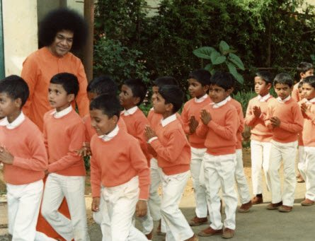

Educational & Sai Parenting Series
Archive (2020): From May through June 2020, the Region 7 SSE wing organized Sai Parenting workshops and presentations as part of the Unity is Divinity series. Access the archived sessions in Educational & Sai Parenting Series - 2020.